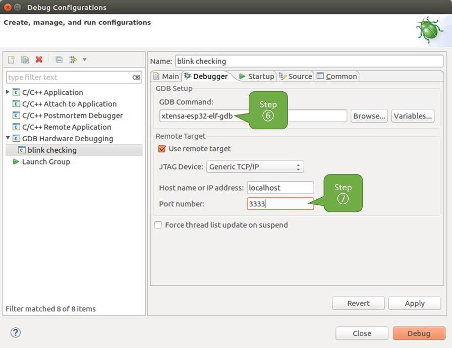

It is recommended to first check if debugger works using Idf.py Debug Targets or from Command Line and then move to using Eclipse.
Eclipse is an integrated development environment (IDE) that provides a powerful set of tools for developing and debugging software applications. For ESP-IDF applications, IDF Eclipse plugin provides two ways of debugging:
By default, Eclipse supports OpenOCD Debugging via the GDB Hardware Debugging plugin, which requires starting the OpenOCD server from the command line and configuring the GDB client from Eclipse to start with the debugging. This approach can be time-consuming and error-prone.
To make the debugging process easier, the IDF Eclipse plugin has a customized ESP-IDF GDB OpenOCD Debugging functionality. This functionality supports configuring the OpenOCD server and GDB client from within Eclipse. All the required configuration parameters will be pre-filled by the plugin, and you can start debugging with just a click of a button.
To install the GDBHardwareDebugging plugin, open Eclipse and select Help > Install New Software.
After installation is complete, follow these steps to configure the debugging session. Please note that some configuration parameters are generic, while others are project-specific. This will be shown below by configuring debugging for "blink" example project. If not done already, add this project to Eclipse workspace following Eclipse Plugin. The source of get-started/blink application is available in examples directory of ESP-IDF repository.
In Eclipse, go to Run > DebugConfiguration. A new window will open. In the left pane of the window, double-click GDBHardwareDebugging (or select GDBHardwareDebugging and press the New button) to create a new configuration.
In a form that will show up on the right, enter the Name: of this configuration, e.g., "Blink checking".
On the Main tab below, under Project:, press the Browse button and select the blink project.
In the next line under C/C++Application:, press the Browse button and select the blink.elf file. If blink.elf is not there, it is likely that this project has not been built yet. Refer to the Eclipse Plugin for instructions.
Finally, under Build(ifrequired)beforelaunching click Disableautobuild.
A sample window with settings entered in points 1 - 5 is shown below.
Configuration of GDB Hardware Debugging - Main tab
Click the Debugger tab. In field GDBCommand, enter xtensa-esp32-elf-gdb to invoke the debugger.
Change the default configuration of the Remotehost by entering 3333 under the Portnumber.
Configuration entered in points 6 and 7 is shown on the following picture.

Configuration of GDB Hardware Debugging - Debugger tab
The last tab that requires changing the default configuration is Startup. Under InitializationCommands uncheck ResetandDelay(seconds) and Halt. Then, in the entry field below, enter the following lines:
mon reset halt
maintenance flush register-cache
set remote hardware-watchpoint-limit 2
Note
To automatically update the image in the flash before starting a new debug session, add the following command lines to the beginning of the InitializationCommands textbox:
mon reset halt
mon program_esp ${workspace_loc:blink/build/blink.bin} 0x10000 verify
Uncheck the Loadimage option under LoadImageandSymbols.
Further down on the same tab, establish an initial breakpoint to halt CPUs after they are reset by debugger. The plugin will set this breakpoint at the beginning of the function entered under Setbreakpointat:. Checkout this option and enter app_main in provided field.
Checkout Resume option. This will make the program to resume after monresethalt is invoked per point 8. The program will then stop at breakpoint inserted at app_main.
Configuration described in points 8 - 11 is shown below.
Configuration of GDB Hardware Debugging - Startup tab
If you have completed the Configuring ESP32 Target steps described above, so the target is running and ready to talk to debugger, go right to debugging by pressing Debug button. Otherwise press Apply to save changes, go back to Configuring ESP32 Target and return here to start debugging.
Once all configuration steps 1-12 are satisfied, the new Eclipse perspective called "Debug" will open, as shown in the example picture below.
Begin by completing the steps described under Configuring ESP32 Target. This is prerequisite to start a debugging session.
Open a new terminal session and go to the directory that contains the project for debugging, e.g.,
cd ~/esp/blink
When launching a debugger, you will need to provide a couple of configuration parameters and commands. The build system generates several .gdbinit files to facilitate efficient debugging. Paths to these files can be found in the build/project_description.json, under the gdbinit_files section. The paths to these files are defined as follows:
The XX_ prefix in the JSON keys is included to have ability to sort them. Sorted fields indicate the recommended order in which to provide the data to GDB.
py_extensions - initializes Python extensions in GDB. This requires Python built with libpython and a version supported by GDB. To verify compatibility, run xtensa-esp32-elf-gdb--batch-silent--ex"pythonimportos", which should complete without errors.
connect - contains commands necessary for establishing a connection to the target device.
To enhance your debugging experience, you can also create custom .gdbinit files, used either alongside or in place of the generated configurations.
Now you are ready to launch GDB. Use the following example command to load symbols and connect to the target (-q option added to minimize startup output):
If the previous steps have been done correctly, you will see a similar log concluded with the (gdb) prompt:
xtensa-esp32-elf-gdb -q -x build/gdbinit/symbols -x build/gdbinit/prefix_map -x build/gdbinit/connect build/blink.elf
user-name@computer-name:~/esp-idf/examples/get-started/blink$ xtensa-esp32-elf-gdb -q -x build/gdbinit/symbols -x build/gdbinit/connect build/blink.elf
Reading symbols from build/blink.elf...
add symbol table from file "/home/user-name/esp-idf/examples/get-started/blink/build/bootloader/bootloader.elf"
[Switching to Thread 1070141764]
app_main () at /home/user-name/esp-idf/examples/get-started/blink/main/blink_example_main.c:95
95 configure_led();
add symbol table from file "/home/alex/.espressif/tools/esp-rom-elfs/20241011/esp32_rev0_rom.elf"
JTAG tap: esp32.tap0 tap/device found: 0x00005c25 (mfg: 0x612 (Espressif Systems), part: 0x0005, ver: 0x0)
[esp32] Reset cause (3) - (Software core reset)
Hardware assisted breakpoint 1 at 0x42009436: file /home/user-name/esp-idf/examples/get-started/blink/main/blink_example_main.c, line 92.
[Switching to Thread 1070139884]
Thread 2 "main" hit Temporary breakpoint 1, app_main () at /home/user-name/esp-idf/examples/get-started/blink/main/blink_example_main.c:92
92 {
(gdb)
Note that the third-to-last line indicates the debugger has halted at a breakpoint established in build/gdbinit/connect file at function app_main(). Since the processor is halted, the LED should not be blinking. If this matches what you observe, you are ready to start debugging.
It is also possible to execute the described debugging tools conveniently from idf.py. These commands are supported:
idf.pyopenocd
Runs OpenOCD in a console with configuration defined in the environment or via command line. It uses default script directory defined as OPENOCD_SCRIPTS environmental variable, which is automatically added from an Export script (export.sh or export.bat).
It is possible to override the script location using command line argument --openocd-scripts.
To configure the JTAG configuration for the current board, please use the environmental variable OPENOCD_COMMANDS or --openocd-commands command line argument. If none of the above is defined, OpenOCD is started with -fboard/esp32-wrover-kit-3.3v.cfg board definition.
idf.pygdb
Starts GDB in the same way as the Command Line, using generated GDB scripts referring to the current project's ELF file. For more details, see Command Line.
idf.pygdbtui
The same as 2, but starts the gdb with tui argument, allowing for a simple source code view.
idf.pygdbgui
Starts gdbgui debugger frontend enabling out-of-the-box debugging in a browser window. To enable this option, run the install script with the "--enable-gdbgui" argument, e.g., install.sh--enable-gdbgui.
You can combine these debugging actions on a single command line, allowing for convenient setup of blocking and non-blocking actions in one step. idf.py implements a simple logic to move the background actions (such as openocd) to the beginning and the interactive ones (such as gdb, monitor) to the end of the action list.
An example of a very useful combination is:
idf.py openocd gdbgui monitor
The above command runs OpenOCD in the background, starts gdbgui to open a browser window with active debugger frontend and opens a serial monitor in the active console.